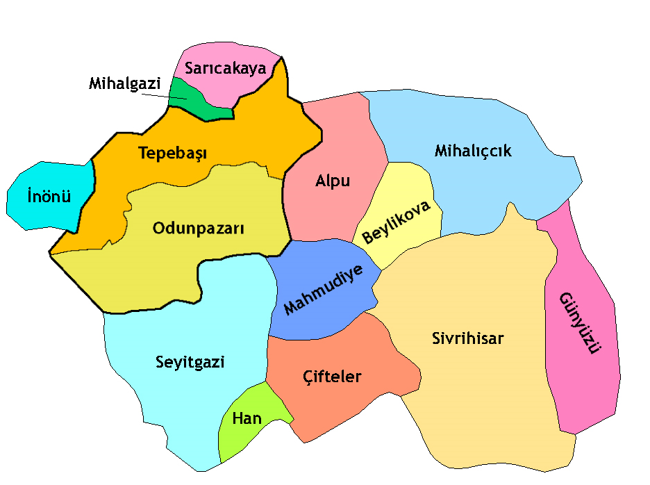

ESKİŞEHİR'İN İLÇELERİ
Eskişehir'in ilçeleri; Alpu, Beylikova, Çifteler, Günyüzü, Han, İnönü, Mahmudiye,
Mihalgazi, Mihalıççık, Tepebaşı, Sarıcakaya, Seyitgazi, Sivrihisar ve Odunpazarı 'dır.

Alpu İlçesi Hakkında Bilgi Almak İçin Tıklayınız.
Anasayfaya Dönmek için Tıklayınız.